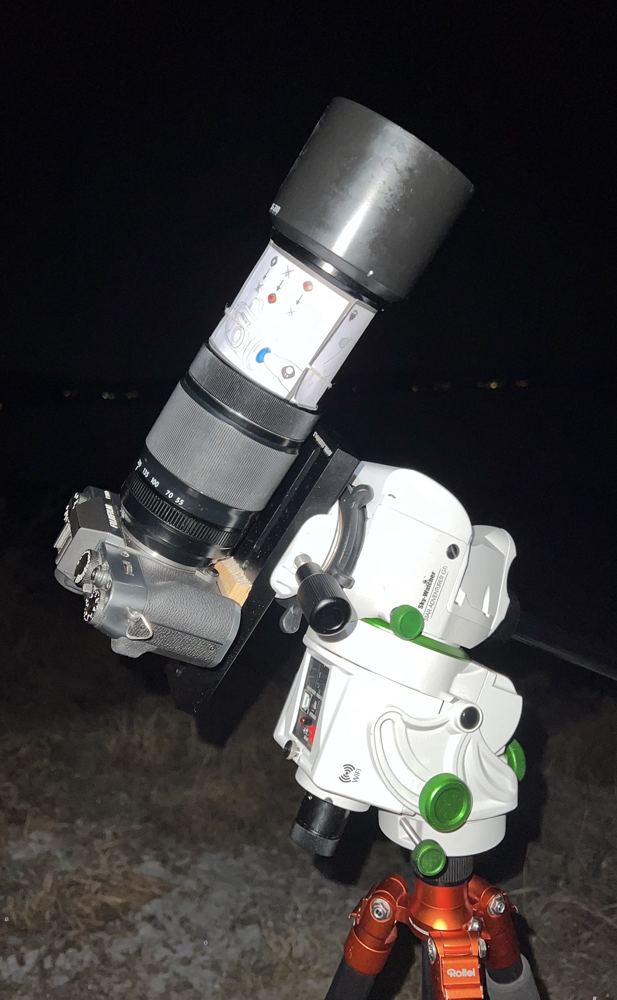

A short note about my setup
How I take my pictures
I do not use a huge amount of equipment. Most of the work is getting outside, finding something interesting, and spending enough time with it.
I use a Fujifilm X-T30 for all my photographs. It is a small camera, which is useful when I am hiking or travelling, and it is the camera I know best.

One of the biggest reasons I travel to remote places is light pollution. The Bortle scale is a way of measuring how much artificial light affects the night sky: a Bortle 1 site is an extremely dark location with almost no light pollution, while a Bortle 9 site is a heavily lit city sky where the Milky Way is washed out and faint deep-sky objects disappear. When I am shooting, I am always looking for darker places because a cleaner, darker sky makes galaxies and nebulae stand out much much more clearly.
The lenses
My everyday lens is the 18-50mm kit lens. I use it for landscapes and for most situations where I want a fairly wide view.
I also have a Fujinon 55-200mm lens. I use this lens for wildlife, but I also use it for astrophotography. It is not the most optimal lens for astro, but it is what I have, and it can still produce images I am happy with.
Finding the deepsky target
Even with a star tracker, locating deep-sky objects was a real challenge at first. I rely on the Sky Guide app to map out the night sky, but early on, I couldn't just point and shoot. Instead, I had to master "star-hopping" using bright, easily visible anchor stars and constellations to carefully guide my camera toward the faint, invisible targets hidden beside them.
Tracking the stars
For most of my astrophotography I use a Sky-Watcher Star Adventurer GTi. It rotates precisely with the stars, which lets me take longer exposures without the stars becoming trails. This is especially useful with the 55-200mm lens, where small movements become very visible. Some of my earliest photographs are untracked, which meant i only had about 1 second exposurefor every frame! And needed usually over 1000 images of the object (lights) for a decent image. You can imagine how much time, effort, computation and storage it took with all thos frames, with a tracker i could take much longer exposure time and thus less images in total for a decent image. Still, in general the more exposure time, the better the resulting image
How I process astro images
I usually take many photographs of the same deepsky object, along with calibration frames: Darks, flats and biases (Look up an article on this if youre interested what these mean). I stack all of them in SIRIL software program. Stacking helps bring out faint details and reduces noise.
After Siril, I use Photoshop for stretching and star masking. This is where I bring out the faint structures in an image and make adjustments to different parts of it. The star masking process is done with starnet++, it essentially gives me the picture back without stars so that i can work on the details of the galaxy/nebulae without distorting stars.
Landscapes and wildlife
My landscape and wildlife photographs are edited in Lightroom. I use it to adjust the light and colours, and to make the final image look closer to how I experienced the scene.
I started out in photography by taking pictures of wildlife. There is something really fascinating about capturing wild animals in motion, in their natural habitat, and I found it especially rewarding to work with my 55-200mm lens at full focal length and as low an aperture as possible to get that soft, creamy bokeh. I always try to respect the animals and never get too close, but as you can see from the image below, sometimes the animals come to me anyway :D

That is basically the whole setup and process.
See the photographs